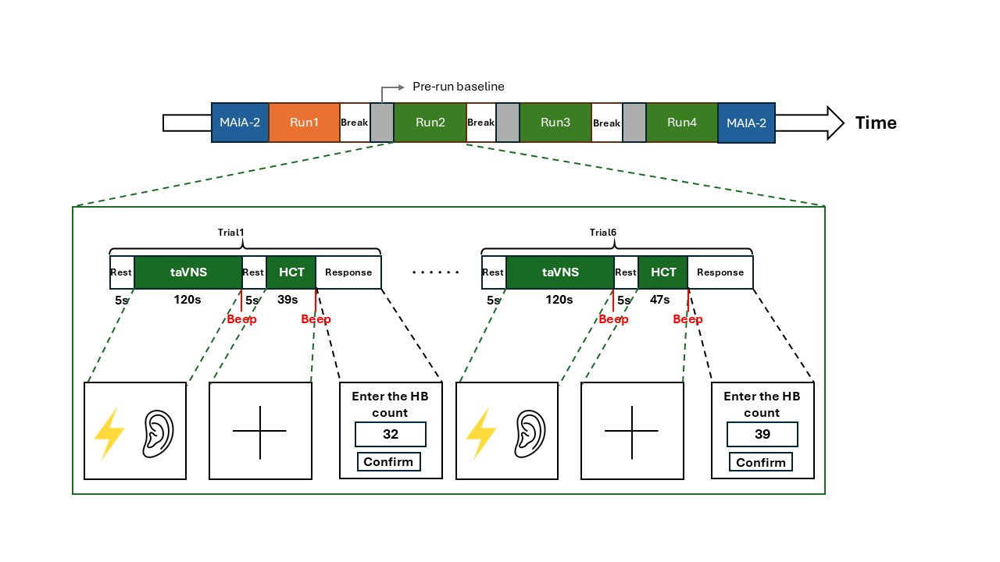

Biomedical Artificial Intelligence and Signal Processing Lab
智慧生醫與訊號處理實驗室
本研究探討經皮耳迷走神經刺激（taVNS）對內感受（interoception）的影響， 透過腦波（EEG）、心電圖（ECG）量測與心跳感知任務，了解大腦與身體訊號的交互關係。
以下為本研究的簡要流程（實際流程以現場研究人員說明為準）：

images/flow_tavns.png 或修改上述路徑。
若您有興趣參與或想了解更多資訊，請來信聯絡：
信件中請簡要提供：姓名、年齡、聯絡方式、可配合實驗時段。